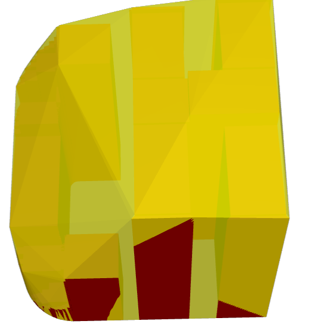

名前
ST_3DConvexHull — ジオメトリの3次元の凸包を計算します。
概要
geometry ST_3DConvexHull(geometry geom1);
説明
Availability: 3.3.0
 このメソッドにはSFCGALバックエンドが必要です。
このメソッドにはSFCGALバックエンドが必要です。
この関数は3次元に対応し、Z値を削除しません。
この関数は多面体サーフェスに対応しています。
この関数は三角形と不規則三角網 (TIN)に対応しています。
例
SELECT ST_AsText(ST_3DConvexHull('LINESTRING Z(0 0 5, 1 5 3, 5 7 6, 9 5 3 , 5 7 5, 6 3 5)'::geometry));POLYHEDRALSURFACE Z (((1 5 3,9 5 3,0 0 5,1 5 3)),((1 5 3,0 0 5,5 7 6,1 5 3)),((5 7 6,5 7 5,1 5 3,5 7 6)),((0 0 5,6 3 5,5 7 6,0 0 5)),((6 3 5,9 5 3,5 7 6,6 3 5)),((0 0 5,9 5 3,6 3 5,0 0 5)),((9 5 3,5 7 5,5 7 6,9 5 3)),((1 5 3,5 7 5,9 5 3,1 5 3)))
WITH f AS (SELECT i, ST_Extrude(geom, 0,0, i ) AS geom
FROM ST_Subdivide(ST_Letters('CH'),5) WITH ORDINALITY AS sd(geom,i)
)
SELECT ST_3DConvexHull(ST_Collect(f.geom) )
FROM f;

3次元凸包をオーバレイした元のジオメトリ